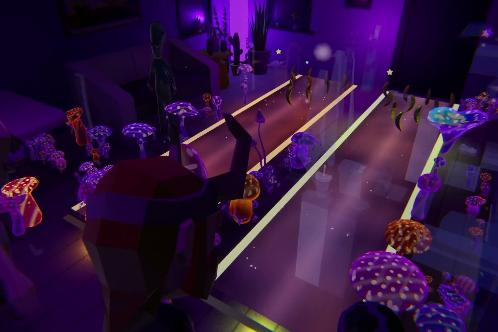

Monkey
Bowls
The living room becomes two lanes. The pins are bananas. The ball is whatever you were holding. Zlorp calls the game from the ceiling and has opinions about your form.
Strike or gutter, he bottles it either way.